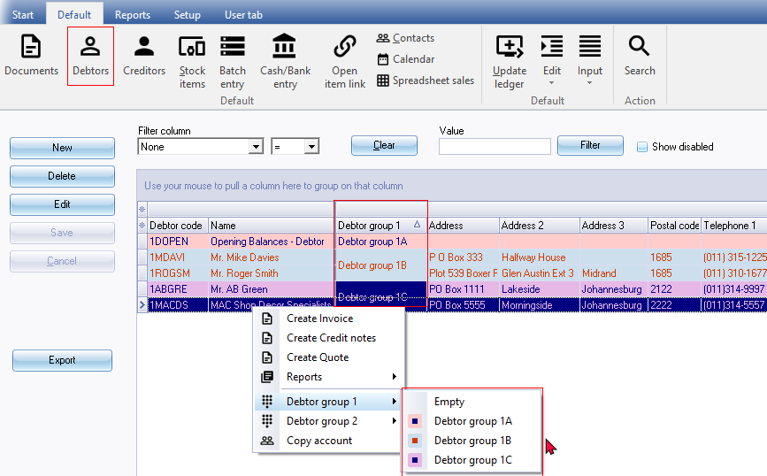
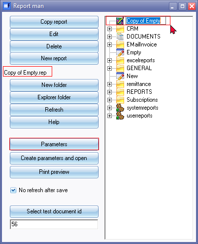
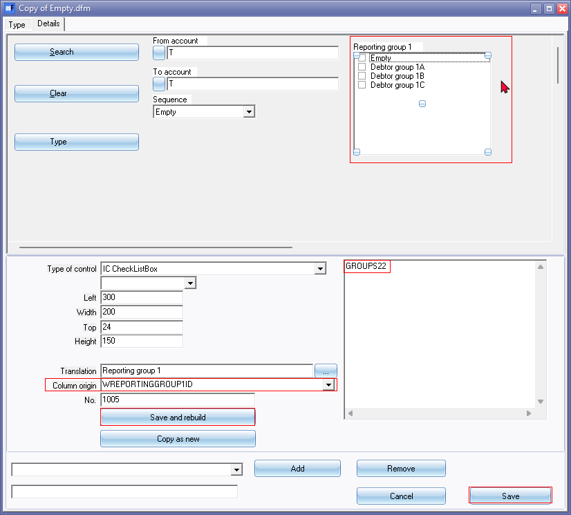
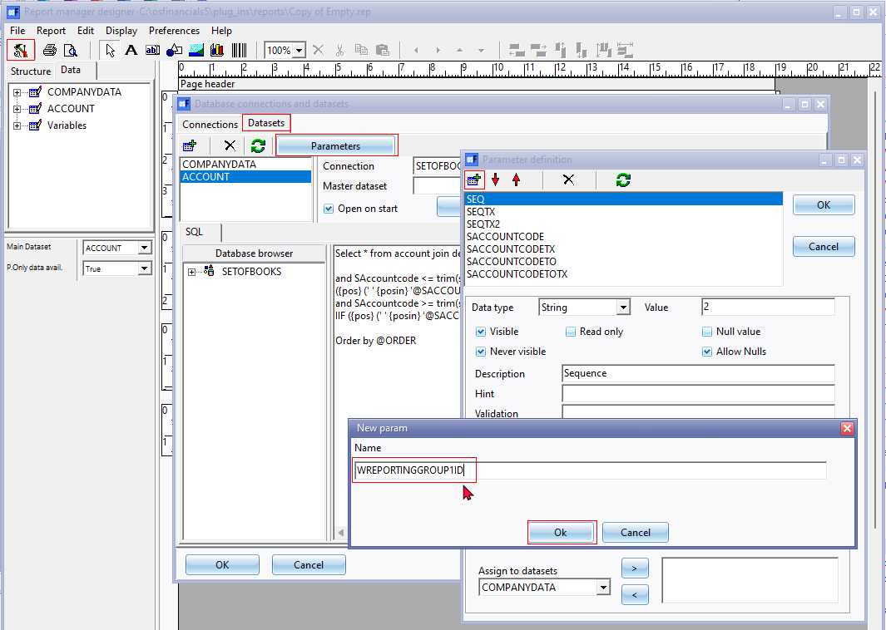
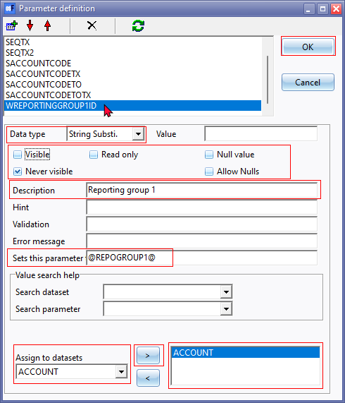
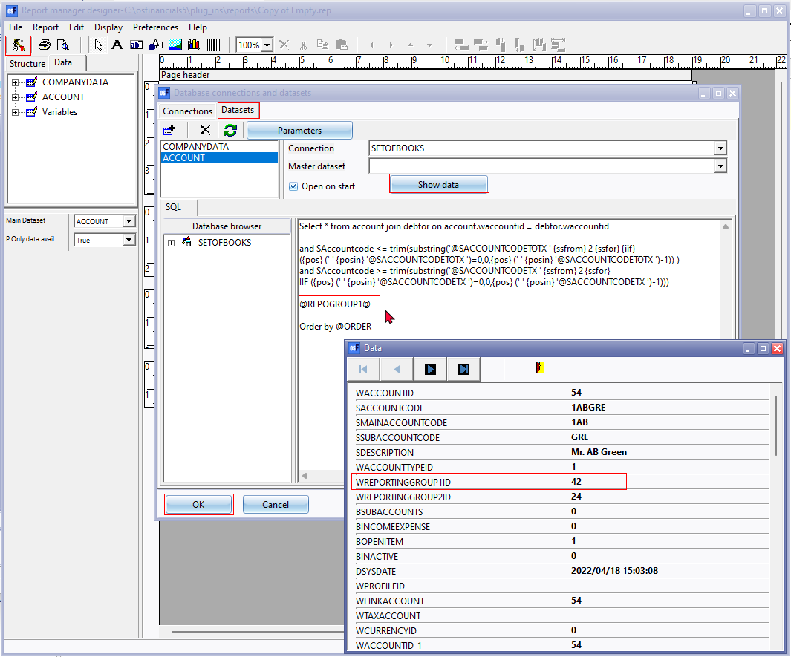

Parameters - Groups
You may add a parameter to select and print a list of the debtor (customer / client) accounts which are linked to specific reporting groups only.

To add the Check list box parameter for Reporting group 1:
- On the "Report man" screen, select your report and click on the Parameters button.

- On the parameters screen for your report, click on the Add button.

- Select the options as follows:
- Type of control - Select "IC CheckListBox".
- Size and position - Enter the values for the Left, Width, Top and Height properties to position your parameter.
- Translation - Click on the ... icon and search for the language label. Select your label (in this example, "Reporting group 1" is selected) and click Ok.
- Click on the Save and rebuild button. This will position an empty CheckListBox on the Parameter screen.

- Enter the following options:
- Column origin - To link the groups, you need to assign a valid column (database field) WREPORTINGGROUP1ID
- SQL - Enter "GROUPS22". This is the "WTYPEID" for "Debtor group 1" in the "V_TYPES" table.
|
|
Note the SQL must be entered in the Plural followed by 22 and entered in UPPERCASE i.e. GROUPS22. If this is not entered correctly, it will not list the "Debtor groups 1", but display "SQL error". |

|
|
See - Reportman - References - Groups for a list of all Reporting groups in the V_TYPES table. |

- Click on the Save and rebuild button. This will populate the Reporting group 1 for debtor (customer / client) accounts, if the SQL and the reporting group ID is assigned correctly.
- Click on the Save button to save your parameter and to close exit the parameters screen.
|
|
If you do not click on the Save button, your parameter or any changes to the parameter will be discarded (lost). |

Add Groups parameter to the report
Once the Parameter is set on the report options screen, you need to add and define the parameter in the report.
The basic process is as follows:
- Add a String substitute parameter and assign the parameter to a dataset.
- On the dataset, you need to add SQL ("@REPOGROUP1@") to reference Report group 1.
To add the Check list box parameter for Reporting group 1 to the report:
- On the "Report man" screen, select your report and click on the Edit button. (You may also double-click on your report).

- Click on the Database connections and datasets icon.
- Click in the Parameters button.
- On the "Parameter definition" screen, select the "ACCOUNT" dataset and click on the Add icon.
- On the "New param" screen, enter "WREPORTINGGROUP1ID".
|
|
This is the ID to Reporting group 1 as set in the Column origin field of the Parameters. This needs to be entered in the UPPERCASE without any spaces (i.e. WREPORTINGGROUP1ID). If this is not entered correctly, it will display "SQL errors". |
- Click Ok. This will add the parameter.
- Select the "WREPORTINGGROUP1ID" parameter.

- On the "WREPORTINGGROUP1ID" parameter select and configure the options as follows:
- Data type - Select "String Substi." (String substitute).
- Properties - Select (tick) the "Never visible" option. The other options may be left blank.
- Description - Enter a description ("Reporting group 1" as per this example).
- Sets this parameter to - Enter "@REPOGROUP1@".
- Assign to datasets - Assign to the ACCOUNT dataset.
- Click OK on the "Parameter definition" screen.
- On the "ACCOUNT" dataset, enter "@REPOGROUP1@" as defined in the "Sets this parameter to" field of the "Parameter definition" screen.

|
|
The "@REPOGROUP1@" in the "ACCOUNTS" must be entered BEFORE the "Order by @ORDER" sort sequence SQL. If entered AFTER the "Order by @ORDER" sort sequence SQL, it will produce a similar SQL error: "ACCOUNT :Dynamic SQL Error |
- To verify that this parameter SQL is entered correctly and on the right place, you may click on the Show data button of the "Database connections and datasets" screen.
- Click OK on the "Database connections and datasets" screen.
|
|
If you do not click on the OK button of the "Database connections and datasets" screen, your parameter or any changes to the parameter will be discarded (lost). |
- Close the "Report manager designer" screen. Remember to Save the report.
|
|
Whenever you close the "Report manager designer" screen, after editing your report, remember save the report. If you click on No, on the "Save report?" confirmation message, your changes will be discarded (lost). |